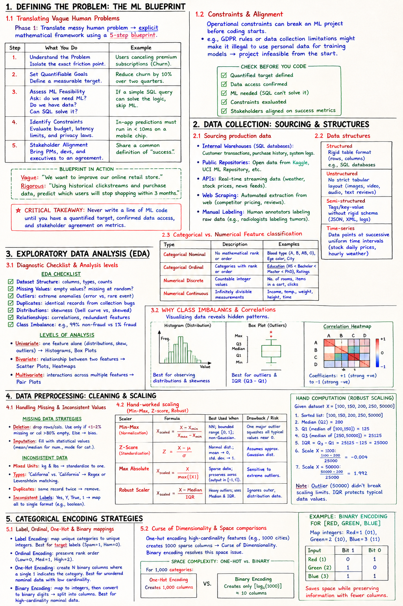

Short Notes & Visual Summary
Handwritten / quick summary notes for Lecture 02:

Click image to open high-resolution version in new tab
Defining the Problem: The ML Blueprint
1.1 Translating Vague Human Problems
An algorithm cannot guess what a business needs. A poorly defined problem wastes more time than a bad algorithm. To solve this, Phase 1 of the ML project lifecycle translates a messy human problem into an explicit mathematical framework using a five-step blueprint:
| Step | What You Do | Example |
|---|---|---|
| 1. Understand the Problem | Isolate the exact friction point. | Users canceling premium subscriptions (Churn). |
| 2. Set Quantifiable Goals | Define a measurable target. | Reduce churn by 10% over two quarters. |
| 3. Assess ML Feasibility | Ask: do we need ML? Do we have data? Can SQL solve it? | If a simple SQL query can solve the logic, skip ML. |
| 4. Identify Constraints | Evaluate budget, latency limits, and privacy laws. | In-app predictions must run in < 10ms on a mobile chip. |
| 5. Stakeholder Alignment | Bring PMs, devs, and executives to a agreement. | Share a common definition of "success". |
- Vague: "We want to improve our online retail store."
- Rigorous: "Using historical clickstreams and purchase data, predict which users will stop shopping within 3 months."
1.2 Constraints & Alignment
Operational constraints can break an ML project before coding starts. For example, GDPR rules or data collection limitations might make it illegal to use personal data for training models, rendering the project infeasible from the start.
Never write a line of ML code until you have a quantified target, confirmed data access, and stakeholder agreement on metrics.
Data Collection: Sourcing & Structures
2.1 Sourcing production data
An algorithm has no concept of reality; it only knows the world you present via training data. Flawed data collection leads to a broken model. There are five main production data sources:
- Internal Warehouses (SQL databases): Customer transactions, purchase history, system logs.
- Public Repositories: Open data repositories like Kaggle and the UCI Machine Learning Repository.
- APIs: Real-time streaming data (e.g., weather feeds, live stock prices).
- Web Scraping: Automated web data extraction (e.g., competitor retail pricing).
- Manual Labeling: Human annotators labeling raw data (e.g., radiologists labeling tumors on X-rays).
2.2 Data structures (Structured vs. Unstructured)
Data exists in diverse formats, defining how it must be ingested:
- Structured: Rigid table formats with rows and columns (e.g., SQL databases).
- Unstructured: Free-form files with no strict tabular layout (e.g., images, video, audio, text reviews).
- Semi-structured: Relies on tags, markers, or key-value structures without a rigid schema (e.g., JSON, XML, sensor logs).
- Time-series: Data points recorded at successive, uniform time intervals (e.g., daily stock prices, hourly weather metrics).
2.3 Categorical vs. Numerical Feature classification
Features must be classified precisely to determine appropriate encoding and scaling:
- Categorical Nominal: Labels without any mathematical rank or order (e.g., Blood Type: A, B, AB, O; Eye Color; City).
- Categorical Ordinal: Category labels with a distinct rank or order (e.g., Education: HS < Bachelor < Master < PhD).
- Numerical Discrete: Countable integer values (e.g., number of rooms, items in a cart).
- Numerical Continuous: Infinitely divisible values representing measurements (e.g., income, temperature, weight).
Exploratory Data Analysis (EDA)
3.1 Diagnostic Checklist & Analysis levels
Like a medical examiner, you must diagnose your data before treating it. EDA identifies critical anomalies before preprocessing occurs. The EDA checklist includes:
- Dataset Structure: Examining columns, types, and counts.
- Missing Values: Finding empty values and checking if they are missing at random.
- Outliers: Detecting extreme anomalies (errors vs. rare events).
- Duplicates: Removing identical records from collection bugs.
- Distributions: Checking skewness (bell curves vs. left/right skews).
- Relationships: Finding correlations and redundant features.
- Class Imbalance: Identifying heavily skewed target labels (e.g., 99% non-fraud vs 1% fraud).
Levels of Analysis:
- Univariate: Analyzing one feature alone (distributions, skew, outliers) using Histograms and Box Plots.
- Bivariate: Checking relationships between two features using Scatter Plots and Heatmaps.
- Multivariate: Investigating interactions across multiple features using Pair Plots.
3.2 Outliers, Distributions & Correlations
Visualizing data reveals hidden patterns:
- Histogram: Best for observing distributions and skewness.
- Box Plot: Best for outliers and visualizing the Interquartile Range (IQR).
- Correlation Heatmap: Displays coefficients from +1 (perfect positive correlation) to -1 (perfect negative correlation).
If a fraud detection dataset is 99% non-fraud, a dummy model that predicts "non-fraud" every single time will score 99% accuracy. This is useless because the recall for the fraud class is 0%.
Data Preprocessing: Cleaning & Scaling
4.1 Handling Missing & Inconsistent Values
Real-world data is messy. Algorithms require clean numerical inputs:
- Missing Data Strategies:
- Deletion: Dropping rows/columns. Best only if <1–2% data is missing or a column is >80% empty. Otherwise introduces bias.
- Imputation: Filling missing cells with statistical values (mean/median for numerical, mode for categorical).
- Inconsistent Data:
- Mixed Units: Weight in both kg and lbs → Standardize to a single unit.
- Typos: e.g., 'Californa' vs. 'California' → Clean using Regex or Levenshtein distance matching.
- Duplicates: Same record logged twice → Remove duplicate records.
- Inconsistent Labels: Yes, Y, True, 1 → Map all to a single label format (e.g., boolean representation).
4.2 Hand-worked scaling (Min-Max, Z-score, Robust)
When features have highly different ranges, distance-based models (KNN, SVM) and gradient descent will be dominated by the larger range. Scaling resolves this.
| Scaler | Formula | Best Used When | Drawback/Risk |
|---|---|---|---|
| Min-Max (Normalization) | Xscaled = (X - Xmin) / (Xmax - Xmin) | Neural networks; bounded range [0, 1]; non-Gaussian. | One major outlier squashes all typical values close to 0. |
| Z-Score (Standardization) | Z = (X - μ) / σ | Normal distribution; mean → 0, standard deviation → 1. | Assumes an approximately Gaussian distribution. |
| Max Absolute | Xscaled = X / max(|X|) | Sparse data; preserves zeros ([-1, 1] output). | Sensitive to extreme outliers. |
| Robust Scaler | Xscaled = (X - Median) / IQR | Heavy outliers present; ignores mean/std. Uses Median and IQR. | Ignores outer distribution data. |
Hand Computation Walkthrough: Robust Scaling
Given dataset X = [100, 150, 200, 250, 50000]:
- Sorted list: [100, 150, 200, 250, 50000].
- Median (Q2) = 200.
- Q1 (median of lower half [100, 150]) = 125.
- Q3 (median of upper half [250, 50000]) = 25125.
- IQR = Q3 - Q1 = 25125 - 125 = 25000.
- Scale X = 100: (100 - 200) / 25000 = -0.004.
- Scale X = 50000: (50000 - 200) / 25000 = 1.992.
Note: The massive outlier (50,000) did not break the scaling limits because the IQR bounds typical data values securely.
Categorical Encoding Strategies
5.1 Label, Ordinal, One-Hot & Binary mappings
Mapping strings to raw integers (e.g. Red=0, Green=1, Blue=2) forces models to assume Blue > Green > Red, introducing a mathematical bias. We must encode categories correctly:
- Label Encoding: Map unique categories to unique integers (e.g., target labels like Spam=1, Ham=0). Best for binary target variables.
- Ordinal Encoding: Explicitly preserve rank order (e.g., Low=0, Med=1, High=2).
- One-Hot Encoding: Create N binary columns where a single high bit indicates the category. Best for unordered nominal data with low cardinality.
- Binary Encoding: Categories are mapped to integers, which are then converted to binary digits. The binary digits are split into separate columns. Best for high-cardinality nominal data.
5.2 Curse of Dimensionality & Space comparisons
One-hot encoding high-cardinality features (e.g., 1000 cities) creates 1000 sparse columns, causing the Curse of Dimensionality. Binary encoding resolves this space issue:
For 1,000 categories:
- One-Hot Encoding: Creates 1,000 columns.
- Binary Encoding: Creates only ⌈log2(1000)⌉ ≈ 10 columns.
Example: Binary Encoding for [Red, Green, Blue]
Map integers: Red = 1 (binary 01), Green = 2 (binary 10), Blue = 3 (binary 11):
| Input | Bit 1 | Bit 0 |
|---|---|---|
| Red | 0 | 1 |
| Green | 1 | 0 |
| Blue | 1 | 1 |
Original PDF Notes
Below is the original PDF document for your reference: